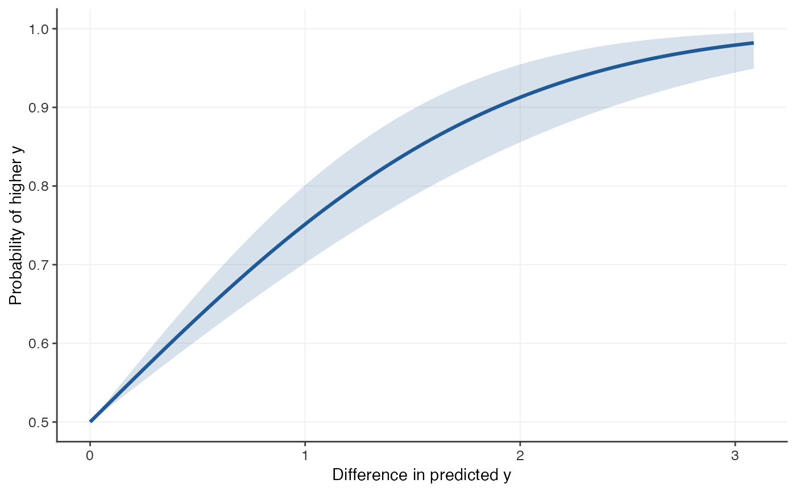

Computes the probability of outcome superiority curve for a linear model's predictions: for two people whose predicted outcomes differ by \(\Delta\), the probability that the one predicted higher actually scores higher.
Usage
posc_lm(
model,
adjust = TRUE,
level = 0.95,
max_delta = NULL,
predictor_name = NULL,
outcome_name = NULL
)Arguments
- model
A fitted
stats::lm()model (notglmor multivariatemlm).- adjust
Use the adjusted multiple correlation?
- level
Confidence level of the band.
- max_delta
Largest difference in the predicted outcome to evaluate. Defaults to 3 standard deviations of the fitted values.
- predictor_name, outcome_name
Labels used in printed output and plots.
outcome_namedefaults to the name of the response variable.
Value
An object of class "posc": a list with elements
- curve
data frame with columns
delta,p,lower,upper, over a symmetric grid of differences.- method, r, n, level, sd_x, max_delta, labels, details
information about how the curve was computed.
Details
The fitted values are treated as a single predictor whose correlation with
the observed outcome is the multiple correlation \(R\) of the model, and
the curve is computed as in posc_uni() under bivariate normality.
Differences are expressed in the units of the outcome (that is, of the
fitted values). With adjust = TRUE (the default) \(R\) is replaced by
the square root of the adjusted \(R^2\); see posc_multi() for why.
Examples
set.seed(1)
d <- data.frame(x1 = rnorm(150), x2 = rnorm(150))
d$y <- d$x1 + 0.5 * d$x2 + rnorm(150)
fit <- posc_lm(lm(y ~ x1 + x2, data = d))
fit
#> Probability of Outcome Superiority Curve
#> Method: bivariate normal, linear model fitted values
#> Predictor: predicted y Outcome: y
#> r = 0.703, 95% CI [0.611, 0.776], n = 150
#> (r adjusted for the number of predictors; unadjusted r = 0.708)
#>
#> P(higher y | predicted y higher by delta):
#> delta p lower upper
#> 0.514 0.637 0.608 0.668
#> 1.029 0.758 0.707 0.808
#> 2.058 0.919 0.862 0.959
plot(fit)
